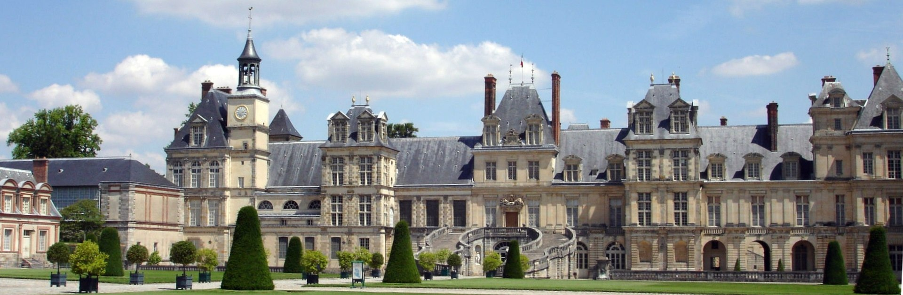
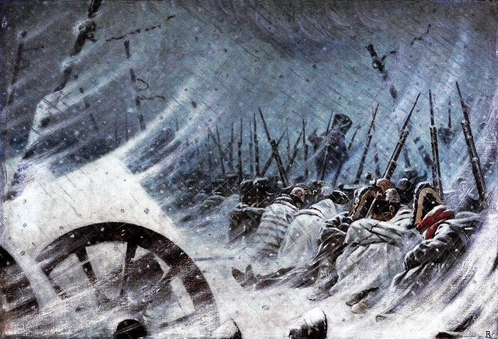
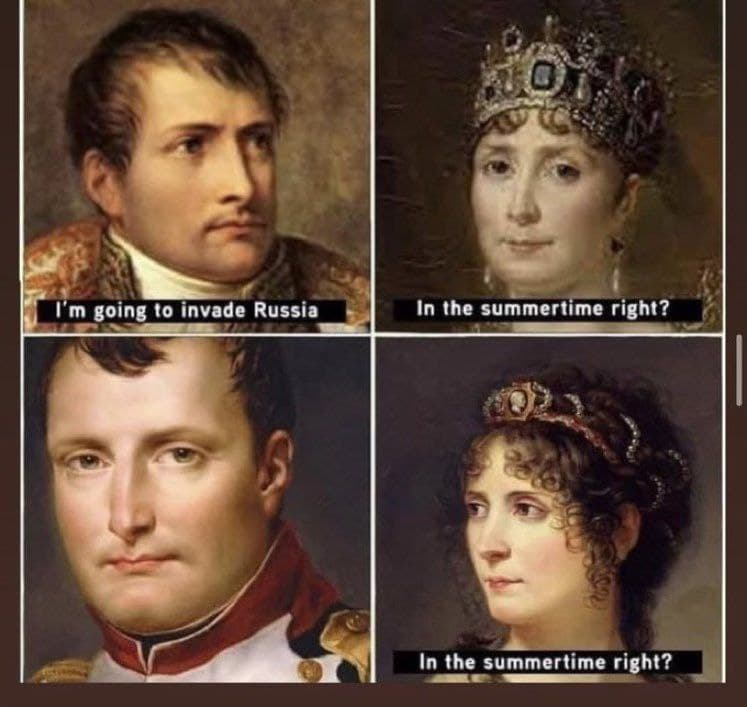
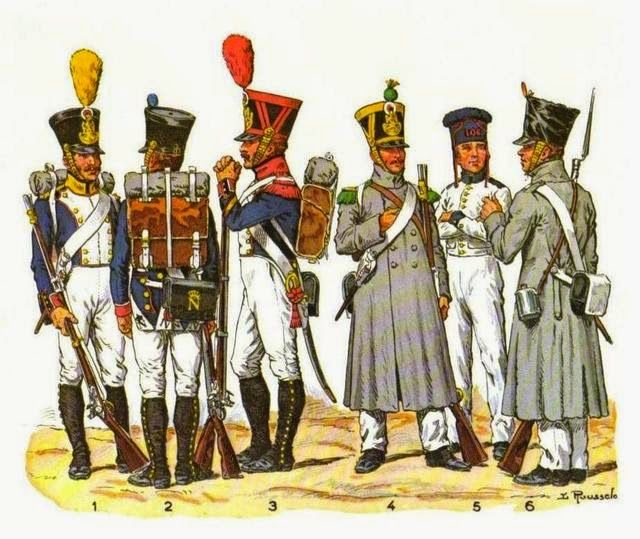

11월 6일에 생긴 일 - 동장군의 습격
게시: 2021-07-12T06:30:48+09:00
비아즈마 전투가 있기 5일 전인 10월 30일, 그루시(Grouchy)가 이끄는 군단 소속 포병 장교인 그리와(Lubin Griois) 대령은 병사들이 행군하며 노래를 부르는 소리를 듣고 흠칫 놀랐습니다. 병사들이 행군하며 노래를 부르는 것은 사기 면에서 아직 염려할 것이 없다는 표시이므로 무척 좋은 일이었습니다. 그런데도 그리와 대령이 놀란 이유는 그가 생각해보니 요 며칠 동안 병사들이 전혀 노래를 부르지 않았다는 것을 문득 깨달았기 때문이었습니다. 이 작은 사건은 2가지를 뜻했습니다. 그만큼 당시 병사들의 사기는 좋지 않았고, 또 적어도 10월 30일에는 그런 병사들도 노래를 부를 정도로 날씨가 좋았다는 것이었습니다. 그렇게 생각한 것은 나폴레옹도 마찬가지였습니다. 나폴레옹은 그 다음날인 10월 31일 비아즈마를 통과했는데, 그날은 날씨가 무척 쾌적하여 나폴레옹은 주변 참모들에게 '퐁텐블로(Fontainebleau)에서 맞는 이맘때 날씨와 똑같지 않은가?'라며 러시아의 추운 날씨에 대해 걱정하던 사람들을 비웃었습니다. 다른 포병 장교인 불라르(Boulart) 대령도 11월 1일 밤을 비아즈마 외곽에서 노숙하며 보냈는데, 이때 와이프에게 편지를 쓰며 이렇게 적었습니다. "무척이나 아름다운 낮을 보내고 아름다운 서리가 내리는 가운데 아름다운 해먹에 앉아 당신에게 편지를 쓰오. 비록 좀 춥기는 하고 그래서 손끝이 좀 무뎌지긴 하지만 내가 고생할까봐 걱정할 필요는 없다는 것을 알아주었으면 하오."

(퐁텐블로 궁전입니다. 퐁텐블로는 파리 바로 인근에 있으며, 여기서 나폴레옹은 제1차 퇴위를 했지요.) 확실히 날씨는 프랑스에 비해 엄청나게 더 춥지는 않았습니다. 비아즈마 전투가 벌어지기 하루 전날인 11월 3일, 카스텔란(Boniface de Castellane) 장군은 "낮은 여름처럼 덥고 밤은 겨울처럼 춥다"라고 불평했는데, 적어도 낮에 햇볕 속에서는 꽤 더웠던 모양이었습니다. 그러나 11월 4일 비아즈마 전투를 치르고 정신없이 후퇴하던 바로 5일 새벽부터 기온이 뚝 떨어지기 시작했습니다. 그러다 운명의 11월 6일이 되었습니다. 제48 보병 연대의 펠레(Pelet) 대령은 이렇게 기록을 남겼습니다. "이 날은 내 기억 속에 아주 강렬하게 각인이 되어 있다. 도로고부즈(Dorogobuzh)를 통과하고나자 비가 꽤 세차게 내리기 시작했는데, 그러더니 기온이 확 내려갔다. 곧 비는 눈으로 바뀌었고, 순식간에 땅 위에 60cm나 눈이 쌓였다." 베르크(Berg) 창기병 연대의 뒤몽소 대위(Francois Dumonceau)도 11월 6일 밤을 뚜렷이 기억했습니다. 그와 그의 동료들은 말리지 않은 나뭇가지로나마 모닥불을 피우고 추위를 피해보려했으나, 거세게 불어오는 북풍으로 인한 추위는 압도적이었습니다. 모닥불을 둘러싸고 둥글게 둘러앉은 장교들 중 하필 바람 반대 방향에 앉았던 뒤몽소 대위는 한쪽은 모닥불에 의해 뜨겁고 반대쪽은 추위로 얼어붙는 와중에 마르지 않은 나뭇가지에서 나오는 연기 때문에 숨이 막힐 지경이었습니다. 도저히 추위를 견딜 수 없었던 그와 그의 동료들은 모두 몸을 녹이려 이리 걷고 저리 뛰고 하며 계속 움직여야 했고, 결국 밤새 잠을 자지 못하고 추위에 시달려야 했습니다. 벨기에 출신이었던 뒤몽소는 이런 경험은 난생 처음이었다고 적었습니다. 그나마 뒤몽소 대위는 운이 좋은 편이었습니다. 바로 그 시각, 도로고부즈의 어느 지붕도 없는 오두막에서는 부상을 당했었던 이탈리아 출신의 벤다이(Bendai) 중위의 상태가 그 갑작스러운 혹한 속에서 악화되는 것을 동료 이탈리아 장교들이 안타까운 눈으로 지켜보고 있었습니다. 결국 벤다이 중위는 이런 말을 남기고 숨을 거두었습니다. "내겐 두 가지 원통한 점이 있네... 하나는 내가 조국 이탈리아의 자유와 독립을 위해 싸우다 죽는 것이 아니라는 것이고 다른 하나는 죽기 전에 내 가족을 다시 볼 기회가 없다는 점이야." 벤다이 중위가 사망한 것이 부상 악화 때문인지 추위 때문인지는 불분명했지만, 이 날 밤 많은 말들이 얼어죽었습니다. 그리고 이 추위는 그 다음날 아침까지 계속 되었는데 이렇게 되자 사람들도 본격적으로 얼어죽기 시작했습니다. 뷔르템베르크 사단의 참모였던 폰 케르너(von Kerner) 대령은 동료 장교들과 오두막에서 밤을 지새고 아침이 되어 병사들을 집합시키려 했으나, 놀랍게도 오두막 밖에서 모닥불을 피우고 자던 주변 병사들이 모두 얼어죽은 것을 보고 깜짝 놀랐습니다. 저 위에서 언급했던 뒤몽소 대위와 그의 동료들은 밤새도록 뛰어다닌 덕분에 피곤하기는 해도 목숨을 건졌으나, 그냥 모닥불을 피워놓고 잠을 잤던 사람들 중 상당수가 모닥불이 꺼지면서 얼어 죽었던 것입니다. 이 정도의 추위를 경험해보지 않았던 유럽 중서부 지역 사람들은 불침번을 정해서 불이 꺼지지 않도록 계속 땔감을 넣어주어야 한다는 것을 몰랐던 것입니다. 나중에야 병사들은 그 사실을 깨닫고 밤새도록 어떻게든 모닥불을 꺼뜨리지 않거나 밤새 잠이 들지 않도록 노력했습니다.

(다른 군대가 괜히 무거운 텐트를 싣고 다니는 것이 아닙니다. 나폴레옹이 자랑하는 기동력의 비결은 그런 텐트 없이 노숙하는 것에 있었지만 그것도 때와 장소를 가릴 때 이야기였습니다.)
사실 이들이 강추위라고 불렀던 이때의 기온은 그렇게까지 낮지는 않았고 기껏해야 영하 10도 정도였습니다. 다만 프랑스군이나 이탈리아군, 독일군 등은 이런 날씨에 야외에서 노숙해본 경험이 별로 없었다는 점과, 무엇보다 이들이 입고 있던 옷은 방한복과는 거리가 멀었던 점이 이렇게 많은 동사자를 내는 참극의 원인이었습니다. 이런 점을 보면, 역시 방한복도 없이 러시아 원정에 나선 나폴레옹의 준비성 부족이 러시아 원정 실패의 주원인이었을까요? 아닙니다. 오히려 방한복을 준비했다면 그것이 더 문제였을 것입니다. 최근에 재미있는 짤(meme)을 인터넷에서 보았는데 아래와 같은 것이었습니다.

"나 러시아에 쳐들어갈거야." "여름에 가는 거 맞지?" "..." "여름에 가는 거 맞냐고." 이 짤만 보면 나폴레옹이 가을에 쳐들어가는 바람에 망한 것처럼 나옵니다만, 여러분께서도 나폴레옹이 6월 23일, 초여름에 쳐들어갔다는 것을 잘 아실 것입니다. 실은 그것도 너무 이르게 시작한 것입니다. 식량을 현지 조달에 의존했던 나폴레옹 군대의 특성상 원래는 여름 보리가 익고 말이 뜯을 목초가 좀 더 자랄 때까지 기다렸다가 쳐들어갔어야 하는데, 나폴레옹도 겨울이 오기 전에 원정을 끝내야 한다는 촉박함 때문에 오히려 너무 일찍 시작한 것입니다. 나폴레옹은 원정이 늘어질 것에 대비하여 방한복을 준비했었어야 했을까요? 제 생각으로는 아닙니다. 방한복을 준비하는 것보다는 어떻게든 원정을 빨리 끝내도록 하는 것이 더 중요했습니다. 어차피 고어텍스를 준비할 수도 없는 마당에 방한복을 준비했다고 해도 큰 도움이 되지는 않았을 것입니다. 실은 당시 유럽 중서부 군대에게는 방한복이라는 개념 자체가 없었습니다. 겨울에는 원래 전쟁을 하지 않는 법이었거든요. 유럽은 원래 겨울이 습하고 눈이 많이 내리는 기후인데다, 겨울에는 밭에서 먹을 것을 구할 수도 없고 눈 쌓인 도로를 통해 식량과 대포를 수송하기도 무척 곤란했기 때문에 겨울에는 전투가 없는 것이 정상이었습니다. 당연히 당시 병사들의 외투나 군모 등은 디자인 면에서나 재질 측면에서나 병사들의 사기를 북돋우기 위해 화려하기는 했지만 추위를 막기에는 부적합했습니다. 그런 경향은 프랑스 군복에 특히 심했습니다. 젊은 참모 장교 페상(Henri-Joseph Paixhans)은 '우리 군대의 외투(capote)는 아마 유럽에서 최악의 방한복일 것'이라고 푸념했습니다. 그래서 막연하게 짜르에게서 평화 사절이 오기를 기다리던 나폴레옹도 11월 1일 이전에 겨울 숙영지로 들어가야 한다고 시간표를 정해놓았던 것이었지요. 그런데 말로야로슬라베츠 전투에서 쿠투조프의 러시아군이 예상 외로 강력한 군세로 방어진을 치는 바람에 모든 것이 헝클어져 버린 것입니다.

(최소한 오른쪽의 회색 외투를 입은 병사들은 좀 나아보이기도 합니다. 그러나 저런 외투들도 천이 너무 얇아서 비바람을 막는 용도로는 어떨지 몰라도 방한에는 큰 도움이 되지 않았다고 합니다.)
어쨌거나 이제 병사들은 그런 얇은 천으로 된 외투로 추위를 견뎌야 하는 상황이 되었습니다. 하지만 병사들이 극복해야 하는 것은 추위 뿐만이 아니었습니다. Source : 1812 Napoleon's Fatal March on Moscow by Adam Zamoyski
https://krigetkommer.weebly.com/napoleonics-blog/painting-french-greatcoats
https://en.wikipedia.org/wiki/Fontainebleau
https://napoleon1812.wordpress.com/tag/captain-francois-dumonceau/